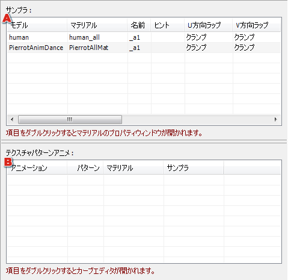

テクスチャプロパティウィンドウ 使用状況ページ
選択したテクスチャの使用状況を確認するページです。

|
A
|
選択したテクスチャを参照しているマテリアルが一覧表示されます。 |
|
B
|
選択したテクスチャが使用されているパターンアニメーションが一覧表示されます。
テクスチャパターンアニメーションで使用されていない場合は、何も表示されません。 |
参考：
関連リンク 一覧表示されたマテリアルや、テクスチャパターンアニメーションをダブルクリックすると、マテリアルプロパティウィンドウの
サンプラページや、
カーブエディタを開くことができます。